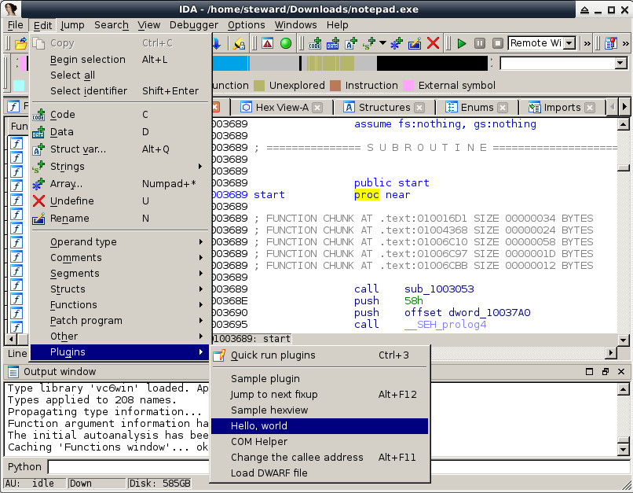
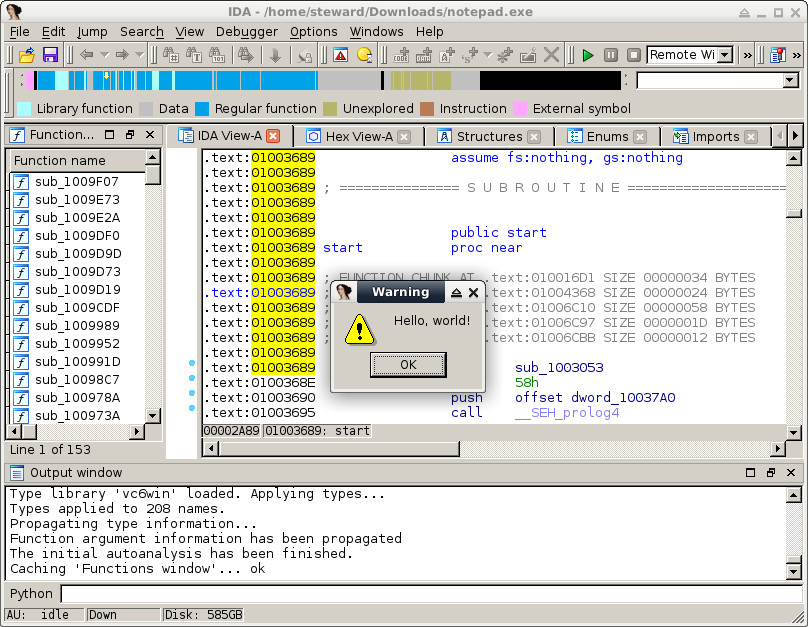

Steward
分享是一種喜悅、更是一種幸福
逆向工程 - IDA Pro - v6.4 - Hello, world!
Debian x64
$ mkdir plugins/hello $ vim plugins/hello/hello.cpp
#include <ida.hpp>
#include <idp.hpp>
#include <loader.hpp>
#include <kernwin.hpp>
int idaapi init(void)
{
return PLUGIN_OK;
}
void idaapi run(int)
{
warning("Hello, world!");
}
plugin_t PLUGIN =
{
IDP_INTERFACE_VERSION,
PLUGIN_UNL, // plugin flags
init, // initialize
NULL, // terminate. this pointer may be NULL.
run, // invoke plugin
NULL, // long comment about the plugin
NULL, // multiline help about the plugin
"Hello, world", // the preferred short name of the plugin
NULL // the preferred hotkey to run the plugin
};
編譯
$ vim plugins/hello/makefile
PROC=hello
include ../plugin.mak
$ vim plugins/makefile
SAMPLES:= hello
$ export __LINUX__=1
$ make
$ cp bin/plugins/hello.plx YOUR_IDA/plugins/
$ cd YOUR_IDA
$ ./idaq
1. 載入一個隨意程式
2. 滑鼠點擊在IDA View-A區域
3. 執行Plugin(hello)

完成
